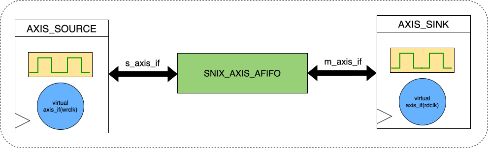
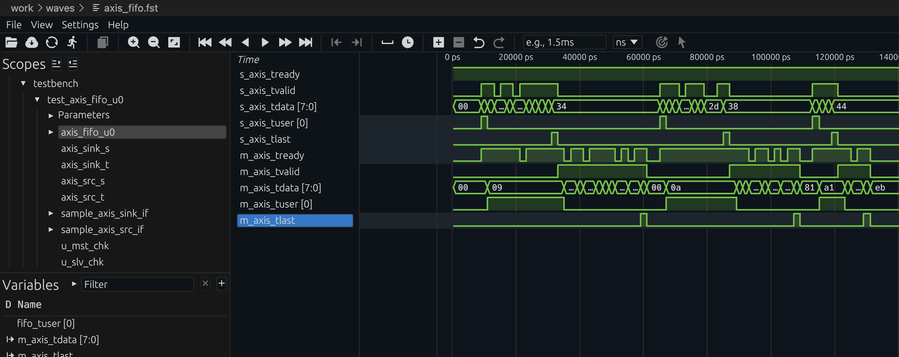

A FIFO (First-In First-Out) buffer is one of the most common building blocks in digital hardware. It decouples a data producer from a data consumer, absorbs rate differences, and provides a clean backpressure boundary between subsystems. FIFOs show up everywhere: in image and video pipelines, in data-compression engines, in Ethernet and storage datapaths, and in clock-domain crossing paths where two parts of the design must exchange data safely despite running at different frequencies.
In video systems, for example, FIFOs are often used to buffer raster streams so downstream blocks can process pixels a line or a frame segment at a time without stalling the source. In SoC fabrics they are equally important as elastic buffers between bus adapters, DMA engines, and peripherals. When the producer and consumer share the same clock, a synchronous FIFO is usually enough. When they operate on independent clocks, an asynchronous FIFO is required, and the design becomes much more subtle. This post explains both, using the implementations in verilaxi as concrete examples.
The synchronous FIFO
A synchronous FIFO stores data in a RAM array and uses a write pointer and a read pointer to track the head and tail. This is the form most designers reach for when both ends of the path live in the same clock domain, for example in local buffering inside an image-processing stage, a decompression datapath, or a streaming bus adapter.
The full and empty conditions are derived by comparing the pointers. A common implementation uses one extra bit in each pointer (making them log2(DEPTH)+1 bits wide): the FIFO is empty when both pointers are identical, and full when they differ only in the MSB.
module snix_sync_fifo #(
parameter DATA_WIDTH = 32,
parameter FIFO_DEPTH = 16 // must be power of 2
)(
input logic clk,
input logic rst_n,
input logic wr_en,
input logic [DATA_WIDTH-1:0] wr_data,
output logic full,
input logic rd_en,
output logic [DATA_WIDTH-1:0] rd_data,
output logic empty
);
localparam PTR_WIDTH = $clog2(FIFO_DEPTH) + 1;
logic [DATA_WIDTH-1:0] mem [0:FIFO_DEPTH-1];
logic [PTR_WIDTH-1:0] wr_ptr, rd_ptr;
// Write port
always_ff @(posedge clk or negedge rst_n) begin
if (!rst_n) wr_ptr <= '0;
else if (wr_en && !full) begin
mem[wr_ptr[PTR_WIDTH-2:0]] <= wr_data;
wr_ptr <= wr_ptr + 1;
end
end
// Read port
always_ff @(posedge clk or negedge rst_n) begin
if (!rst_n) rd_ptr <= '0;
else if (rd_en && !empty)
rd_ptr <= rd_ptr + 1;
end
assign rd_data = mem[rd_ptr[PTR_WIDTH-2:0]];
assign empty = (wr_ptr == rd_ptr);
assign full = (wr_ptr[PTR_WIDTH-1] != rd_ptr[PTR_WIDTH-1]) &&
(wr_ptr[PTR_WIDTH-2:0] == rd_ptr[PTR_WIDTH-2:0]);
endmodule
Synchronous FIFO primitive (rtl/common/snix_sync_fifo.sv)
Full and empty in real RTL
In the textbook version of a synchronous FIFO, the status logic looks trivial: empty is true when the write and read pointers are equal, and full is true when the pointers match in address bits but differ in the wrap bit. If the memory read is purely combinational, the data output can also be wired directly from the current read address, so the whole FIFO appears very simple.
Real implementations get more interesting once the memory is expected to infer block RAM. FPGA BRAMs are most naturally inferred with synchronous read behaviour, which means the data output is registered and appears a cycle later. At that point, full and empty flags can no longer be treated as purely casual side calculations around the RAM array. The control logic must account for read latency, bypass conditions, and the exact cycle on which the FIFO transitions from empty to non-empty or from one item to zero items.
That is why the verilaxi synchronous FIFO keeps explicit registered state such as fill_cnt, fifo_empty, and a first-word-fall-through bypass path. The bypass covers the case where a write arrives to an empty FIFO and software or downstream logic expects the first word to become visible immediately, even though the BRAM-style read path is registered. Without that extra logic, the FIFO would either add an unwanted bubble on the first read or fail to preserve the expected FWFT behaviour.
One edge case is especially important: a read without a simultaneous write, that is rd_en && !wr_en. In the verilaxi synchronous FIFO this is the 2'b01 case, where the design decrements fill_cnt and sets fifo_empty <= (fill_cnt <= 1). The reason is subtle but important: if the FIFO currently holds exactly one word, then the read happening on this clock edge consumes the last valid item, so the FIFO must be marked empty for the next cycle. Testing fill_cnt == 0 would be too late, because by the time the counter has visibly become zero the control has already missed the transition point.
The same logic explains why the condition is <= 1 rather than exactly == 1. It protects the boundary cleanly and keeps the registered empty flag aligned with the post-read occupancy. In other words, the empty flag is not answering "was the FIFO empty before this edge?" but rather "will the FIFO be empty after this accepted read completes?" That is the right question when the data path is registered.
There is a related edge on the full side as well. Because the synchronous FIFO tracks occupancy explicitly with fill_cnt, the full condition is taken from the MSB of that counter rather than from a fresh combinational pointer comparison. A write with no matching read increments the count; once the counter reaches the configured capacity, the MSB asserts and the next write is blocked. Again, the key point is that registered status follows the state after the accepted transfer, not just the state visible before it.
The same caution applies to asynchronous FIFOs. In theory, one can describe full and empty entirely as pointer comparisons. In practice, once the design uses Gray-coded pointers, synchroniser stages, and BRAM-friendly registered reads, the full and empty decisions become intentionally conservative. The write side sees a delayed version of the read pointer, the read side sees a delayed version of the write pointer, and the data output is often registered. That delay is exactly why the extra CDC headroom discussed above is not optional hand-waving but part of making the implementation robust.
The asynchronous FIFO handles the same problem differently because there is no single trustworthy local fill counter shared by both domains. Instead, the read side computes emptiness from the synchronised write pointer: in verilaxi the local condition is lcl_rd_empty = (rd_wgray == rgray), and the registered output rempty is updated only when the read-side control advances. Likewise, the write side computes wfull from the synchronised read pointer with the usual Gray-code wrap-bit test. So the sync FIFO says "after this local read, the count will be zero," whereas the async FIFO says "based on the latest safely synchronised remote pointer, no unread words remain." Both are solving the same boundary problem, but one uses local occupancy state and the other uses delayed cross-domain pointer knowledge.
So there is a real trade-off here. Combinational-read FIFOs are easy to describe and easy to reason about in a whiteboard derivation. Registered-read FIFOs need more status and bypass logic, but that complexity is what allows the design to map cleanly onto BRAM and scale to realistic buffer sizes. That is the path taken in the verilaxi sync and async FIFOs: more careful control logic in exchange for better hardware inference and more realistic implementation behaviour.
The clock domain crossing problem
When the write and read sides operate on independent clocks — for example, a 300 MHz write clock and a 200 MHz read clock — the pointer comparison used in the synchronous FIFO breaks down. A binary pointer updated in the write clock domain contains multiple bits that change simultaneously. If the read clock samples this pointer at an inopportune moment, it may see a partially updated value (a glitch), which causes an incorrect full or empty decision. This is a clock domain crossing (CDC) hazard.
Sizing the FIFO depth
Choosing the FIFO depth is not just a matter of picking a convenient power of two. In practice the depth must absorb the worst-case difference between how fast data arrives and how fast it can be removed, plus a small amount of extra headroom due to CDC synchronisation latency and pessimistic full and empty flag generation.
A useful first-order sizing rule is
$$ D_{\text{fifo}} \ge \left\lceil \Delta R \cdot T_{\text{stall}} \right\rceil + H_{\text{cdc}} $$where \(\Delta R = \max(0, R_{\text{wr}} - R_{\text{rd}})\) is the worst-case excess write rate over the read rate during a burst or stall window, \(T_{\text{stall}}\) is the maximum time the reader can be unable to drain the FIFO, and \(H_{\text{cdc}}\) is a safety margin that covers synchroniser delay, pointer visibility lag across the clock domains, and any conservative full/empty flag behaviour.
Putting numbers on this helps. Suppose the write side runs at \(300\,\text{MHz}\) and can push one word per cycle, while the read side runs at \(200\,\text{MHz}\) and also removes one word per cycle. The excess arrival rate is then
$$ \Delta R = 300 \times 10^6 - 200 \times 10^6 = 100 \times 10^6 \text{ words/s} $$If the read side can be stalled for \(80\,\text{ns}\), then the write side can accumulate about
$$ \Delta R \cdot T_{\text{stall}} = 100 \times 10^6 \cdot 80 \times 10^{-9} = 8 $$extra words during that window. Adding, say, \(H_{\text{cdc}} = 3\) words of CDC margin gives a practical minimum of \(11\) words, so the implementation would usually round up to a power of two such as 16.
As another example, if the write clock is \(148.5\,\text{MHz}\) and the read clock is \(100\,\text{MHz}\), the ratio is \(1.485{:}1\). The net accumulation rate is \(48.5\,\text{Mwords/s}\). Over a \(200\,\text{ns}\) burst of downstream stall, the FIFO must absorb about
$$ 48.5 \times 10^6 \cdot 200 \times 10^{-9} = 9.7 $$words, which means at least 10 storage locations before CDC margin. With a headroom of 2 to 4 words, a depth of 16 is again a sensible engineering choice.
In a purely asynchronous FIFO, the CDC headroom matters because the write side does not see the read pointer instantaneously, and the read side does not see the write pointer instantaneously either. A common practical rule is to reserve at least two or three words of headroom beyond the analytically required storage. That margin keeps the design away from the exact full/empty boundary where synchroniser delay is most painful.
For raster video, the same idea appears in a more application-specific way. If a downstream block consumes one whole video line in bursts, the FIFO often needs to hold approximately one line of pixels plus CDC headroom:
$$ D_{\text{video}} \ge N_{\text{line}} + H_{\text{cdc}} $$and multi-line image filters may need two or more full-line buffers depending on the stencil. The exact number depends on the algorithm, but the principle is the same: start from the dataflow requirement, then add explicit CDC margin rather than assuming the theoretical minimum is enough.
Gray code encoding
The classic solution is to encode the pointer in Gray code before crossing the clock domain. A Gray code counter changes only one bit per increment, which means the receiving clock domain either sees the old value or the new value — never a glitch. Figure (3) shows the Gray code for a 3-bit counter.
// Binary to Gray code conversion
function automatic [PTR_WIDTH-1:0] bin2gray(input [PTR_WIDTH-1:0] bin);
return bin ^ (bin >> 1);
endfunction
// Gray code to binary conversion (for local use only — never cross gray back to binary)
function automatic [PTR_WIDTH-1:0] gray2bin(input [PTR_WIDTH-1:0] gray);
logic [PTR_WIDTH-1:0] bin;
bin[PTR_WIDTH-1] = gray[PTR_WIDTH-1];
for (int i = PTR_WIDTH-2; i >= 0; i--)
bin[i] = bin[i+1] ^ gray[i];
return bin;
endfunction
Binary-to-Gray and Gray-to-binary conversion functions
The asynchronous FIFO
The asynchronous FIFO (snix_async_fifo) uses separate write and read clocks. The write pointer is maintained in binary in the write clock domain, converted to Gray code, and synchronised into the read clock domain through a two-stage flip-flop synchroniser. The read pointer undergoes the same treatment in the opposite direction. Full and empty flags are then computed using the Gray-coded pointers.
module snix_async_fifo #(
parameter DATA_WIDTH = 32,
parameter FIFO_DEPTH = 16
)(
input logic wr_clk,
input logic wr_rst_n,
input logic wr_en,
input logic [DATA_WIDTH-1:0] wr_data,
output logic wr_full,
input logic rd_clk,
input logic rd_rst_n,
input logic rd_en,
output logic [DATA_WIDTH-1:0] rd_data,
output logic rd_empty
);
localparam PTR_WIDTH = $clog2(FIFO_DEPTH) + 1;
// Dual-port RAM
logic [DATA_WIDTH-1:0] mem [0:FIFO_DEPTH-1];
// Write-domain pointers (binary and Gray)
logic [PTR_WIDTH-1:0] wr_ptr_bin, wr_ptr_gray;
logic [PTR_WIDTH-1:0] rd_ptr_gray_sync1, rd_ptr_gray_sync2; // read ptr synced to wr_clk
// Read-domain pointers (binary and Gray)
logic [PTR_WIDTH-1:0] rd_ptr_bin, rd_ptr_gray;
logic [PTR_WIDTH-1:0] wr_ptr_gray_sync1, wr_ptr_gray_sync2; // write ptr synced to rd_clk
// Write side
always_ff @(posedge wr_clk or negedge wr_rst_n) begin
if (!wr_rst_n) wr_ptr_bin <= '0;
else if (wr_en && !wr_full)
wr_ptr_bin <= wr_ptr_bin + 1;
end
assign wr_ptr_gray = wr_ptr_bin ^ (wr_ptr_bin >> 1);
always_ff @(posedge wr_clk or negedge wr_rst_n) begin
if (!wr_rst_n) begin
rd_ptr_gray_sync1 <= '0;
rd_ptr_gray_sync2 <= '0;
end else begin
rd_ptr_gray_sync1 <= rd_ptr_gray;
rd_ptr_gray_sync2 <= rd_ptr_gray_sync1;
end
end
// Full: write pointer has lapped the read pointer
assign wr_full = (wr_ptr_gray[PTR_WIDTH-1] != rd_ptr_gray_sync2[PTR_WIDTH-1]) &&
(wr_ptr_gray[PTR_WIDTH-2] != rd_ptr_gray_sync2[PTR_WIDTH-2]) &&
(wr_ptr_gray[PTR_WIDTH-3:0] == rd_ptr_gray_sync2[PTR_WIDTH-3:0]);
// Write to memory
always_ff @(posedge wr_clk)
if (wr_en && !wr_full)
mem[wr_ptr_bin[PTR_WIDTH-2:0]] <= wr_data;
// Read side
always_ff @(posedge rd_clk or negedge rd_rst_n) begin
if (!rd_rst_n) rd_ptr_bin <= '0;
else if (rd_en && !rd_empty)
rd_ptr_bin <= rd_ptr_bin + 1;
end
assign rd_ptr_gray = rd_ptr_bin ^ (rd_ptr_bin >> 1);
always_ff @(posedge rd_clk or negedge rd_rst_n) begin
if (!rd_rst_n) begin
wr_ptr_gray_sync1 <= '0;
wr_ptr_gray_sync2 <= '0;
end else begin
wr_ptr_gray_sync1 <= wr_ptr_gray;
wr_ptr_gray_sync2 <= wr_ptr_gray_sync1;
end
end
assign rd_empty = (rd_ptr_gray == wr_ptr_gray_sync2);
assign rd_data = mem[rd_ptr_bin[PTR_WIDTH-2:0]];
endmodule
Asynchronous FIFO with Gray-coded pointer synchronisation (rtl/common/snix_async_fifo.sv)
The AXI-Stream async FIFO and frame mode
snix_axis_afifo wraps snix_async_fifo with an AXI-Stream interface and adds a frame-aware mode (FRAME_FIFO). In streaming mode (FRAME_FIFO=0), the output side begins draining as soon as data is available. In frame mode (FRAME_FIFO=1), the read side waits until a complete packet (a beat with TLAST asserted) has been written before asserting TVALID. This ensures frames are emitted atomically — the consumer never sees a partial frame.
Frame completion is a one-cycle event in the write clock domain. Crossing it to the read domain without missing it requires a toggle synchroniser: a flip-flop in the write domain toggles on every TLAST beat; a two-stage synchroniser in the read domain captures the toggle. The read logic detects a change in the synchronised toggle and releases the read side.
{kind=link}

Figure (4): AXI-Stream asynchronous FIFO structure across write and read clock domains. The Gray-coded pointer exchange is part of the implementation even though it is not drawn explicitly in this simplified block diagram.
{kind=link}

Figure (5): AXI-Stream async FIFO in frame mode. The output side waits until TLAST has been written before beginning to drain. Waveform captured from verilaxi.
Running the simulation
# Streaming mode, source and sink backpressure
make run TESTNAME=axis_afifo FRAME_FIFO=0 TESTTYPE=1 SRC_BP=1 SINK_BP=1
# Frame store-and-forward mode
make run TESTNAME=axis_afifo FRAME_FIFO=1 TESTTYPE=1 SRC_BP=1 SINK_BP=1
Running the async FIFO simulation with verilaxi
Summary
A synchronous FIFO uses matching write and read pointers with an extra MSB to distinguish full from empty, making it a compact and efficient solution for same-clock buffering. An asynchronous FIFO solves the CDC problem by encoding pointers in Gray code before synchronising them across clock domains with a two-stage flip-flop chain. Frame mode adds a toggle synchroniser so complete packets are released atomically rather than leaking out beat by beat.
That combination of simple elasticity, safe clock crossing, and stream-aware buffering is why FIFOs appear in so many systems: video-line buffers, image-processing pipelines, compression datapaths, DMA front ends, and general SoC interconnect glue logic. The full implementation of snix_sync_fifo, snix_async_fifo, and snix_axis_afifo is available in verilaxi.
Read next:
AXI DMA — Moving Data Without the CPU for a system-level example of FIFOs in streaming datapaths.
Building a Verilator Testbench for AXI Designs for how the async FIFO and CDC tests are run.
Implementation pointers in verilaxi: rtl/common/snix_sync_fifo.sv, rtl/common/snix_async_fifo.sv, and rtl/axis/snix_axis_afifo.sv.
References:
[1] Clifford E. Cummings. Simulation and Synthesis Techniques for Asynchronous FIFO Design. SNUG San Jose, 2002.
[2] Dan Gisselquist. Cross clock asynchronous FIFO in Verilog. ZipCPU, 2018.
[3] 01signal. Timing constraints for FPGA FIFOs and why improved timing matters.
[4] ARM. AMBA AXI4-Stream Protocol Specification. 2010.
Also available in GitHub.